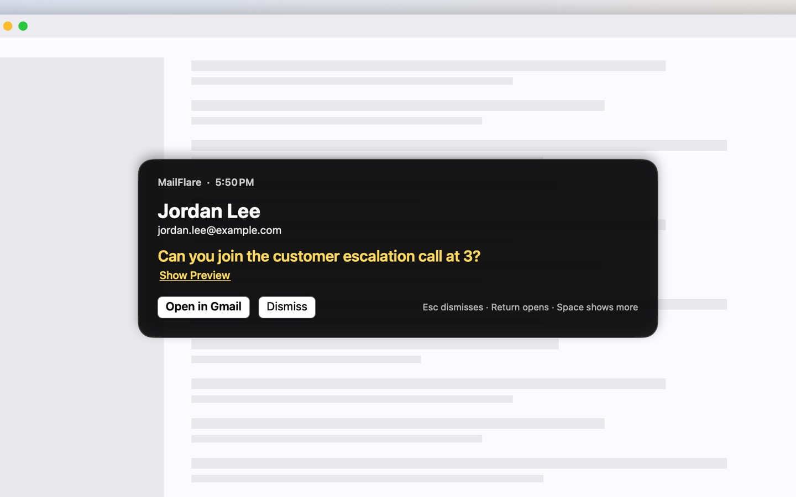
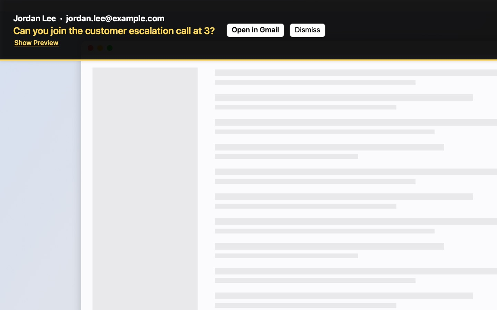
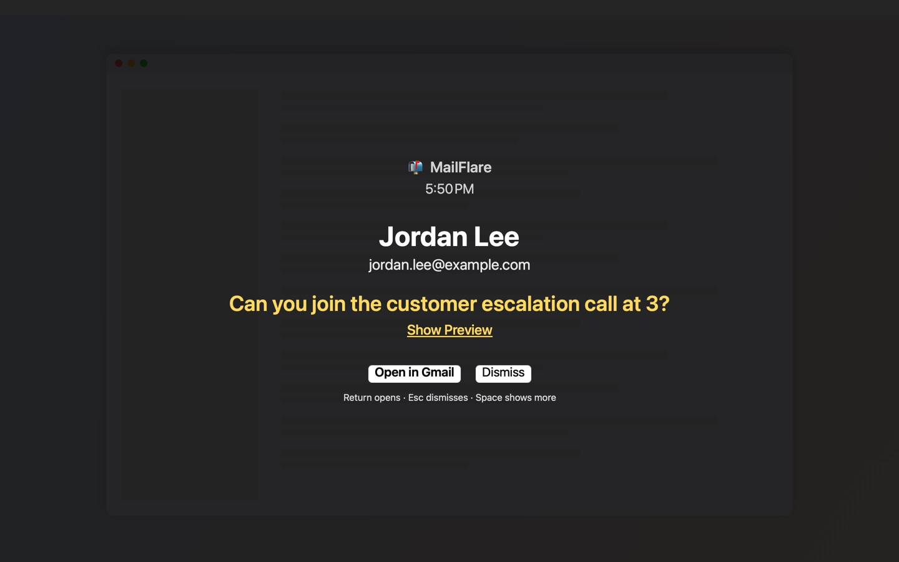

MailFlare
A macOS menu bar app that puts an unmissable alert on screen when an important email arrives in Gmail.
What it does
You tell MailFlare which senders, domains, or subject keywords matter: your manager, your on-call paging service, a customer escalation list. When a matching message arrives in Gmail, MailFlare shows an alert with who it's from and the subject, and keeps it there until you dismiss it or open the message. The preview stays hidden until you choose Show Preview, so a stranger's words never fill your screen; you can turn that off in Settings, or hide the subject too.
Because the alert is a real app window rather than a notification, Focus modes, Do Not Disturb, and notification settings don't suppress it. That's the point: for the handful of messages you genuinely must not miss, "I had notifications off" stops being a reason.
Three ways to be alerted
By default the alert is a card on the display you're using. You can switch to a banner across the top of every display, or a full-screen alert on every display. The card and banner flash the screen briefly and leave your typing alone; the full-screen alert takes the keyboard, so Return opens the message and Esc dismisses it.



Screenshots show sample mail.
Setting it up
The setup assistant signs you in to Gmail, then suggests people from your recent inbox and from the people you write to, so picking who gets through takes a few clicks. You can also start from a template: "My bank", "Anyone at my company", or "Outages & on-call". The "My bank" rule alerts only for senders Gmail has verified, so a forged bank email can't set off an alert. Then choose an alert style and send yourself a test alert to see it.
You can add more Gmail accounts later in Settings. Each rule watches every account, or just the one you pick.
How it works
- You sign in with your Google account. MailFlare requests read-only access to Gmail; it cannot send, modify, or delete anything.
- Every 30 seconds by default (as often as every 15 seconds if you choose), it asks Gmail for new unread messages and checks their sender and subject against your rules.
- Everything happens on your Mac. MailFlare has no servers; your email never leaves your computer and is never shared with anyone.
- If Gmail can't confirm that a sender is really who the address says, the alert tells you, and any rule can be set to alert only for verified senders.
- Quiet hours keep alerts off overnight, and you can pause alerts for 30 minutes, an hour, until 9 AM tomorrow, or until you resume them.
- Opening an alert takes you to the message in Gmail in your browser, in Apple Mail, or in another mail app you choose.
Requirements
macOS 14 (Sonoma) or later, and a Gmail or Google Workspace account.